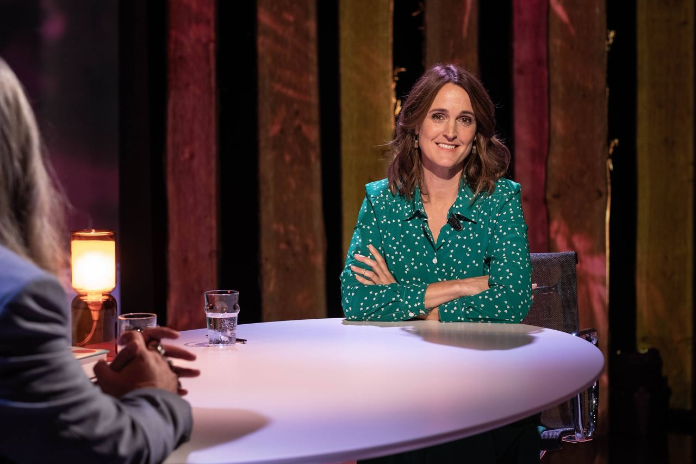

Info
Janine Abbring is presentator, programmamaker, schrijver en (als het zo uitkomt) dagvoorzitter.
Ze was met zes jaargangen (2017-2022) een van de langst zittende presentatoren van het avondvullende VPRO-interviewprogramma Zomergasten. Voor haar interview met voormalig burgemeester van Amsterdam, Eberhard van der Laan, ontving ze de prestigieuze Sonja Barend Award voor het beste televisie- interview. Sinds 2021 presenteert ze ook de Engelstalige versie Wintergasten, met internationale gasten.
Janine was eindredacteur van het succesvolle Zondag met Lubach, dat zowel een Televizierring als Nipkowschijf in de wacht sleepte. Momenteel is ze werkzaam als eindredacteur van het dagelijkse comedyprogramma De Avondshow met Arjen Lubach op NPO1.
Daarnaast is ze de vaste maker van de podcastserie van het Rijksmuseum en voor de podcast ‘Dit is Goed’ interviewt ze tal van vakidioten over wat zij het allerbeste vinden wat ooit is gemaakt binnen hun vakgebied.
In het verleden was ze presentator van het radio- en televisieprogramma Vroege Vogels en deed ze verslaggeving voor De Wereld Draait Door als zogenoemde ‘Jakhals’. Ook schreef ze voor diverse kranten en tijdschriften, o.a. LINDA, Happinez, Yoga Magazine en het Dagblad van het Noorden.
Dankzij haar brede journalistieke ervaring en toonaangevende opdrachtgevers als het Ministerie van Justitie, Triodos Bank, NautaDutilh en het UMCG heeft ze een brede ervaring op het corporate presentatievlak en is ze goed inzetbaar als dagvoorzitter, ook in het Engels.